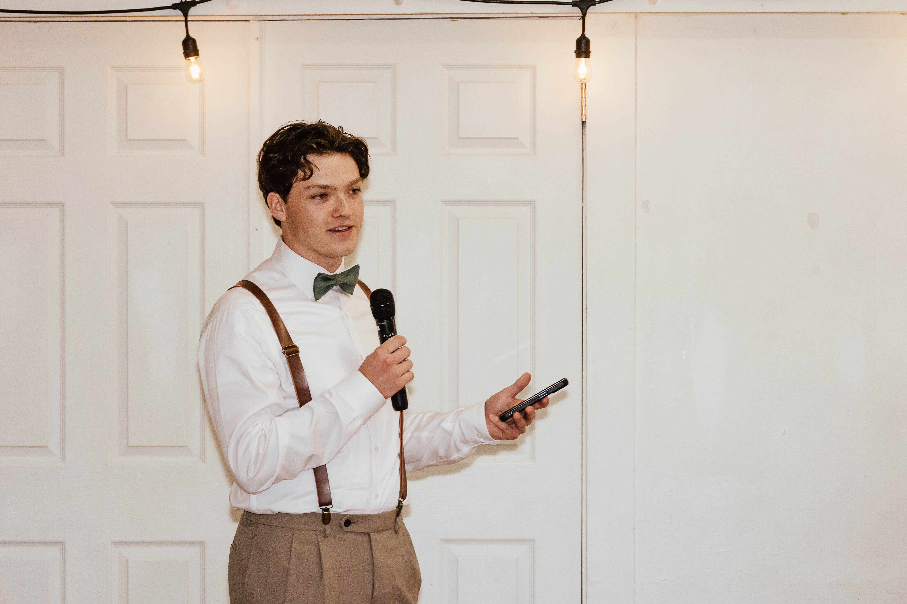

brady ancell
computer science student

hello! i'm a computer science student at the colorado school of mines. currently, i'm completing my undergraduate degree in computer science with a minor in computational and applied mathematics. i'm passionate about all kinds of software, problem-solving, and innovative technology.
i have a lot of experience in web development and love to combine my knack for aesthetics with technical programming. i enjoy creating things, whether its a simple script to automate a monotonous task, or a more complicated website with a unique ui.
i'm constantly exploring new technologies and methods to enhance my skill set. no matter the size of the project, i approach every program with a focus on quality, innovation, and user experience.
explore my projects, connect with me on linkedin, or check out my github.